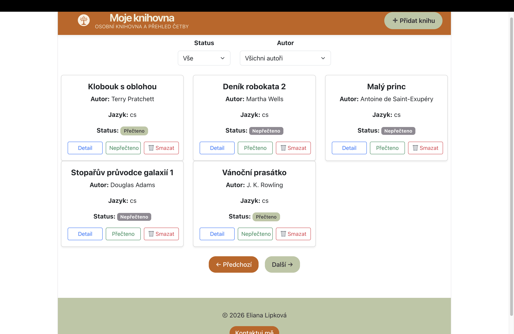

Reference
Moje knihovna
{kind=link}

Fullstack webová aplikace pro správu osobní knihovny a přehled četby. Aktuálně se jedná o první verzi projektu, která umožňuje přidávání knih, úpravy, mazání, filtrování podle autora a stavu přečtení, změnu statusu knih a stránkování výsledků. Projekt je nasazený online a propojuje Django REST API backend s React frontendem, přičemž je navržený tak, aby bylo možné jej dále rozšiřovat o nové funkce.
Technologie: Django, Django REST Framework, Python, React, JavaScript, PostgreSQL, Render, Vercel
Portfolio web

Osobní portfolio vytvořené pomocí HTML a CSS. Web slouží k prezentaci mých projektů, technologických dovedností a kontaktních údajů. Součástí je vlastní doména a nasazení přes GitHub Pages.
Technologie: HTML, CSS, GitHub Pages
Evidence pojištěných

Konzolová aplikace v Pythonu pro správu pojištěných osob. Projekt je zaměřený na objektově orientované programování, validaci vstupů, práci s kolekcemi a návrh přehledné aplikační logiky.
Technologie: Python, OOP
Na GitHubu je součástí privátního repozitáře, ale ráda poskytnu ukázku kódu na vyžádání.
React kalkulačka

Jednoduchá webová aplikace vytvořená v Reactu pro procvičení práce s komponentami, stavem aplikace a uživatelskými vstupy.
Technologie: React, JavaScript, HTML, CSS